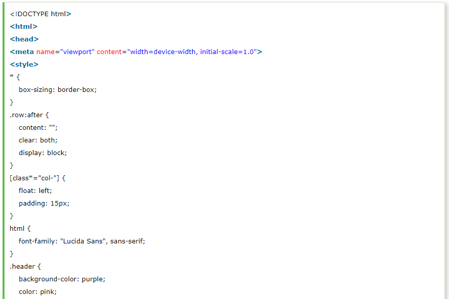

CSS Media query is a W3C recommendation and a CSS3 module which is used to adapt to conditions such as screen resolution (e.g. Smartphone screen vs. computer screen).
Following is a list of media features recommended for media queries by W3C.
The term Responsive Web Design was given by Ethan Marcotte. It facilitates you to use fluid grids, flexible images, and media queries to progressively enhance a web page for different viewing contexts i.e. Desktop, Smartphone, Tablet etc.
Smartphone: 320px
Tablet: 768px
Netbook: 1024px
Desktop: 1600px
Let's take an example to see the simple use of media query:
This example specifies that if you resize your window less than 500px, the background color will be changed.
See this example:
Media query can be used to create a responsive webpage. The breakpoint is used on web pages where you want that certain parts of the design will behave differently on each side of the breakpoint.
Let's take an example:
Here we use a media query to add a breakpoint at 768px.
See this example:
